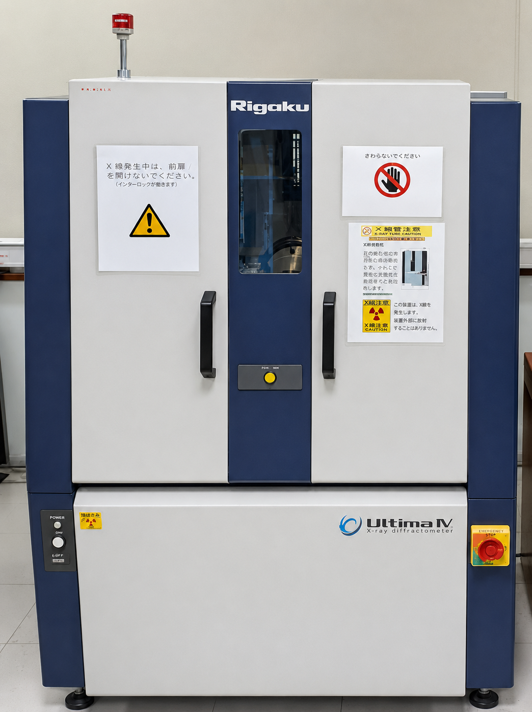

Make: RIGAKU, Model: Ultima IV
X-ray diffraction (XRD) is a non-destructive analytical technique which uses x-rays to investigate and quantify the crystalline nature of materials by measuring the diffraction of X-rays from the planes of atoms within the material. Samples analyzed using XRD are typically in the form of finely divided powders, but diffraction can also be obtained from surfaces and bulk specimens.
The Rigaku Ultima IV operates based on the principle of X-ray diffraction which involves directing X-rays onto a crystalline material and measuring the angles and intensities of the diffracted beams. This diffraction data is then analyzed to determine the crystallographic structure, identify chemical phases, and evaluate the physical properties of the crystalline material.
| Component | Parameter | Details |
|---|---|---|
| X-ray generator | Maximum rated output | 1.6 kW |
| Tube voltage | 40 kV | |
| Tube current | 40 mA | |
| Target | Cu (other: cobalt) | |
| Focus size | 0.4 x 12 mm | |
| Goniometer | 2θ measuring range | -3 to 162° (maximum) |
| Minimum step size | 0.0001° | |
| Detector | Detector type | Scintillation counter |
Location of Facility:
Central Research Facility
Indian Institute of Technology Delhi
Hauz Khas, New Delhi – 110016
xxxxxxxxxxx
Central Research Facility
IIT Delhi, Hauz Khas, New Delhi – 110016
Phone: xxxxxxxxx
Email: xxxx@iitd.ac.in
Name: xxxxxxx
Mobile number: xxxxxxxxxxxx
Email Address: xxxxxxxxxxxx@iitd.ac.in